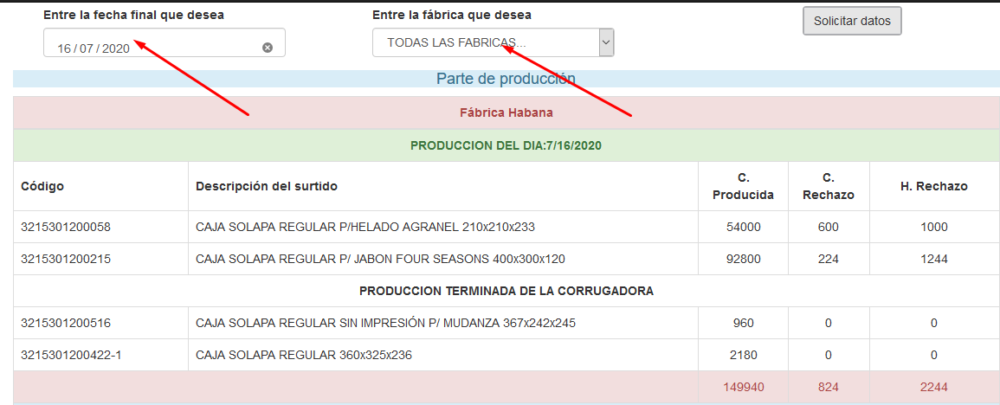
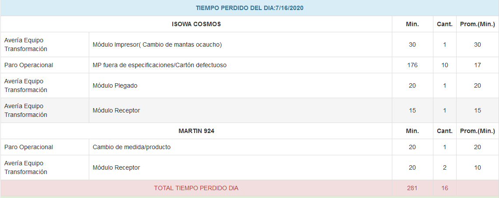
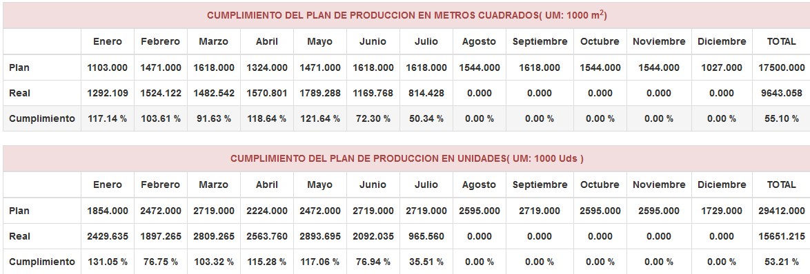
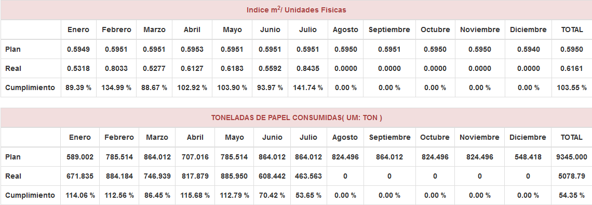
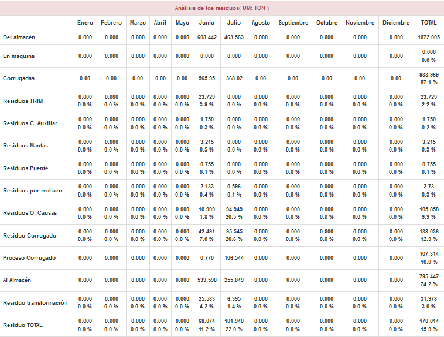

En aras de llevar un control exhaustivo de la producción se confeccionó este software, que a partir de la entrada diaria de los datos productivos, permite el cálculo de los principales indicadores productivos, así como brindar un análisis estadístico de la producción, el consumo, los tiempos perdidos, índices de eficiencia.
Con acceso público se ofrecen un grupo de informaciones que detallamos a continuación:  En la primera pantalla se tiene un desglose de la producción, el tiempo perdido por fábrica y por dia, semana, mes y año.  Existe tambien una pestaña de Cumplimiento y estadística donde se ofrecen los siguientes elementos:  Cumplimiento por fábrica y total de los metros cuadrados corrugados y la producción de unidades.  Indices productivos más importantes y consumo por mes de papel.  Control de los residuos.